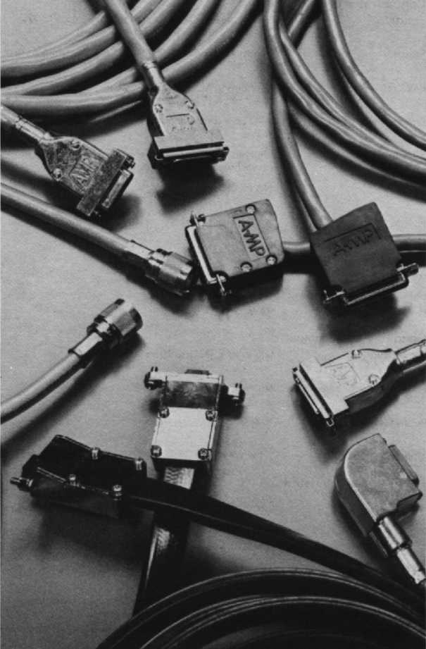

Terminals and Printers Handbook 1983-84
Chapter 19
Contents
Cables are a critical link in connecting your video terminal and printer together or to processor buses, communications options and other peripherals in both local and remote applications.

Chapter 19
Contents
http://vt100.net/docs/tp83/cal1901.html